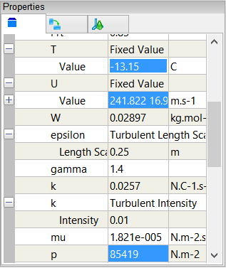
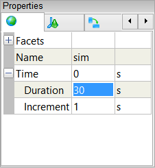

Transonic Flow Over the NACA 0012 Airfoil
Simulate a steady-state, transonic (compressible) turbulent flow around the NACA 0012 airfoil in pseudo 2D. View pressure coefficient (Cp) contours and the Cp distribution over the airfoil surface.
The original mesh and conditions for this case were provided by FreeCASE.
The FreeCASE mesh is optimized for an inviscid (viscosity free) flow simulation, so it has no cells clustered close to the airfoil to resolve the viscous boundary layer. Hence, using the mesh in this tutorial is to aid understanding of how to import a mesh and configure a transonic flow simulation with Caedium, rather than to produce a definitive viscous result.
Goals
In this tutorial, you will learn how to:
- Import a mesh file into Caedium
- Specify fluid conditions on a single volume for a compressible, steady-state, turbulent flow simulation
- Change the turbulence model
- Set relaxation factors
- Specify boundary conditions on faces
- Monitor residuals to determine flow simulation convergence
- Generate a color map (contours)
- Create an XY plot
Assumptions
- You have activated the Caedium RANS Flow add-on, or Caedium Professional.
- You are familiar with Caedium essentials.
- You have downloaded and extracted the FLUENT mesh file naca0012.msh from naca0012.zip (292 KB).
Import the FLUENT Mesh File into Caedium
Select the File Toolbar and click the Import button  . Select Geometry as the file type and navigate to the location of the naca0012.msh file you downloaded. Double-click on naca00012.msh to import the NACA 0012 mesh into Caedium.
. Select Geometry as the file type and navigate to the location of the naca0012.msh file you downloaded. Double-click on naca00012.msh to import the NACA 0012 mesh into Caedium.
To see the mesh outline (edges), rotate (left-click-and-drag the mouse) and zoom (rotate the mouse wheel) the view in the View Window until the airfoil is in the approximate orientation shown below.
Once the mesh is within Caedium it is treated as geometry, which means that the procedure for setting up the physics and extracting the results is no different to that for native geometry created in Caedium. The "View a Mesh" tip describes how to see the mesh directly.
The mesh for this tutorial is specially configured to be one cell thick so you can perform a pseudo 2D simulation.
Specify the Substance Settings
Specify the Fluid Conditions
Select the Physics Tool Palette. Select Gases->Air. The Properties Panel will show the default properties for air. To enable steady-state turbulent (viscous) flow the State->Rotational and State->Viscous properties should be set to Yes (their default values). The State->Species and State->Transient properties should to be set to No (their default values).
For transonic (compressible) flow, set State->Compressible to Transonic and State->Heat Transfer to Yes.
Drag and drop the Air tool onto the View Window background, double-click sim->Volumes in the Select dialog, and then select Done to set air as the fluid inside the flow volume.
Set the Turbulence Model for the Simulation
For turbulent flow, a turbulence model is an essential part of a Reynolds-Averaged Navier-Stokes (RANS) solver. In this tutorial, you will use the k-epsilon turbulence model rather than the default SST k-omega turbulence model.
With the volume already selected from the previous step, the Properties Panel will show the Substance: Air properties by default. Expand the Substance: Air->Solver: RANS Flow property and set the Turbulence Model to be k-epsilon.
Set the Reference Values for the Simulation
The reference values can be used to initialize the simulation and to specify boundary conditions. In this tutorial you will set reference values for velocity, pressure, and temperature.
The conditions for this case are:
- T (temperature) = 260 K = -13.15 C
- p (pressure) = 85419 Pa = 85419 N.m-2
- U (velocity) = [241.8220 16.9098 0] m.s-1, from:
- Alpha (angle of attack) = 4 degrees = [cos 4, sin 4, 0] = [0.9976 0.06976 0]
- Mach No. = 0.75 = 242.41 m.s-1. See "Mach Number" for conversion calculation using:
- gamma = 1.4
- R = 8.314472 J·K-1·mol-1
- W = 0.02897 Kg·mol-1
In the Properties Panel set Substance: Air->Properties->Phase: Single->Reference->T: Fixed Value->Value to be -13.15. Next set U: Fixed Value->Value to be [241.8220 16.9098 0]. Finally set p to be 85419 and press Enter on the keyboard.

Set the Relaxation Factors for the Simulation
Changing the default enthalpy relaxation factor in this example will help the simulation to converge. See "Relaxation Factors in RANS Flow Solvers" for tips on setting relaxation factors.
In the Properties Panel, expand the Substance: Air->Solver: RANS Flow->Relaxation Factors property, and then set e to be 0.4.

Specify the Boundary Conditions
Drag and drop the Faces->Wall tool onto an edge of the airfoil. Double-click wing in the Select dialog and select Done to create a wall.
A wall is a solid surface through which fluid cannot flow.
In the Home Toolbar click the Fit-All button  to view the entire volume.
to view the entire volume.
Drag and drop the Faces->Inlet-Outlet tool onto the circular edge of the volume. Double-click outerboundary in the Select dialog and select Done to create an inlet-outlet.
By providing a one cell thick mesh and not creating any boundary conditions on the front and back faces the flow solver will perform a pseudo 2D flow simulation.
Display Initial Pressure Coefficient Color Map
Select the Results Tool Palette. Drag and drop the Scalar Fields->Cp (pressure coefficient) tool onto the wing edge closest to your view point in the View Window. Double-click front in the Select dialog and select Color Map to create contours of pressure coefficient.

Since the initial Cp value is 0 everywhere, no contours will be shown until the the simulation is run.
Display Initial Pressure Coefficient Plot
Drag and drop the Scalar Fields->Cp (pressure coefficient) tool onto the same wing edge as in the previous section. Double-click edge_3 in the Select dialog and select XY Plot to create a Cp plot against XYZ:X (X-position).
In the Properties Panel expand the Y Axis: Cp property and turn on the Reverse property.
When presenting Cp plots it is typical to reverse the Cp axis values.
In the Cp Plot Legend select edge_3 and in the Properties Panel set Symbol to None.
Drag and drop the Cp Plot tab over to the right-hand edge of the Caedium application window to split the window into two parts as shown below.
Create Residuals Monitor
Drag and drop the Special->Residuals tool onto an edge of the flow volume. Double-click volume in the Select dialog and select Monitor to create the residuals monitor.
In the Properties Panel expand the X Axis: Iteration property and set Major Ticks to 3.
Drag and drop the Residuals tab over to the right-hand edge of the Caedium application window to split the window into three parts as shown below.
Run the Flow Solver
The number of flow (simulation) solver iterations is determined by multiplying the number of simulation time-steps (default = 5) by the number of iterations per simulation time-step (default = 100). After each simulation time-step (equivalent to 100 iterations by default) the results will be refreshed.
For this simulation you will increase the number of simulation time-steps to 30, for a total of 3000 iterations.
Right-click on the View Window (view) background, double-click sim, and then select Properties from the menu. Select the Simulation tab  in the Properties Panel. Set Time->Duration to 30 and press Enter on the keyboard.
in the Properties Panel. Set Time->Duration to 30 and press Enter on the keyboard.

In the Home Toolbar click the Run button  to run the flow solver.
to run the flow solver.
If you wanted to interrupt the flow solver, you would re-click the Run button; the solver would then stop at the end of the current simulation time-step.
Let the solver complete its run. Note the updates of the Cp contours, the Cp plot, and the residuals monitor as the simulation progresses.
Feedback
Questions? Ideas? Problems?

Comments
2D Models?
This airfoil simulation is very nice.
Is it possible with Caedium to produce native 2D simulations without importing an externally generated special mesh?
3D Only
No Caedium can not produce these special one cell thick (extruded) meshes yet.
One-cell-thick meshes
Is it possible to do this for another airfoil yet? The last time this was asked was over a year ago so I'm hoping it is :)
If not, is there a way to produce something similar? I have a two-element rear wing (2 upside-down airfoils) for a race car and wish to do a simple 2D pressure analysis followed by a more indepth 3D analysis.
Extrude 2D to 3D
If you create a multi-block mesh constrained with each block having 6 faces for the hexahedral meshing routines then yes you can create a one cell thick mesh. However, the decomposition for a 2-element airfoil would be very tricky.
I think your best option is to create a 3D airfoil, just extrude the 2D profiles and perform a 3D simulation.
Thank you, I'll just stick
Thank you, I'll just stick with the extruded 3D airfoil :)
Is there a way to change the
Is there a way to change the number of contour lines on the pressure plot on the aerofoil?
Left click Color Map in Legend Control
Left click the Color Map title in the Legend Control, and then in the Properties Panel change the Colors property. For more details see the tip "Color Map".
Thanks, that works
Thanks, that works